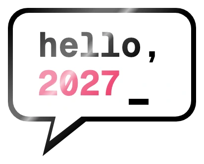
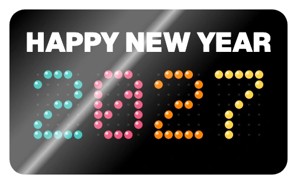

One channelto follow.
Start here
devsa.community
Every event and every group, always current.
Join the chat
 Discord: devsa.community/discord
Discord: devsa.community/discord
Follow along

 @devsatx
@devsatx
 LinkedIn: /company/devsa
LinkedIn: /company/devsa

January 15–31, 2027 · #Connections
DreamWeek
Seventeen days of forums, performances, screenings, service days and shared tables, hosted by the people and organizations of San Antonio.
Community partnerConnecting San Antonio’s learners and builders to DreamTech.


Thanks for watching · see you in February
Find your people.Build your future.
Start here
devsa.community
Subscribe to the community calendar: every group’s meetups, in one place.
Run a group?
Put your events on the calendar. Sign in at devsa.community
Support DEVSA
A 501(c)(3), run by a volunteer board. Donate at devsa.community
@devsatx · devsa.community/discord